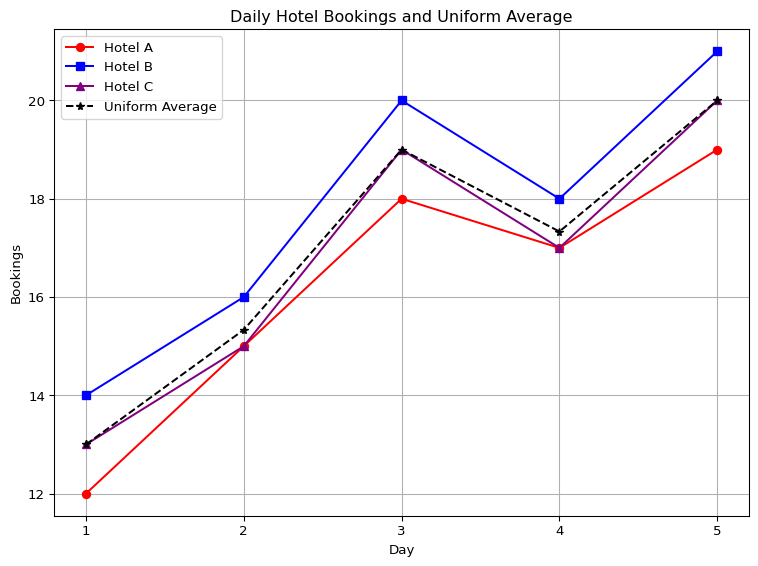
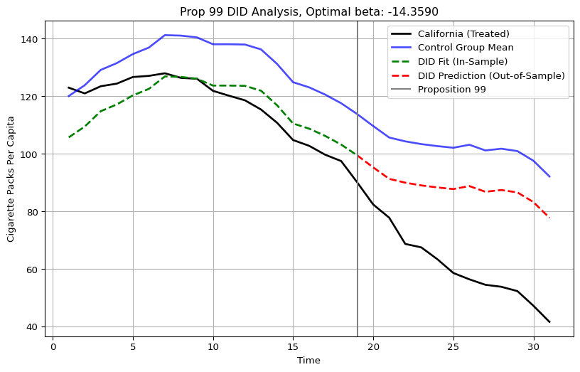
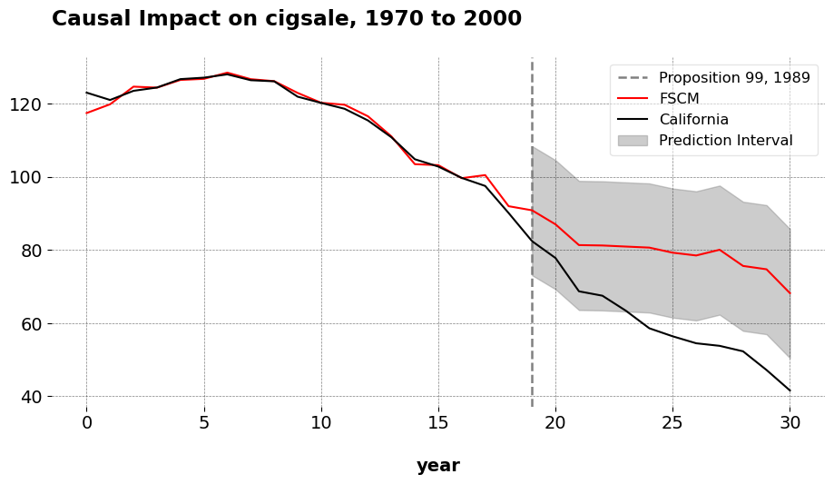

What Are We Weighting For?
Econometric Theory
Intro
In causal inference, many estimators can be understood as performing a weighted comparison between observed and counterfactual outcomes, but we do not always frame it like that. In this post, I cover experiments, difference-in-differences, and synthetic control estimators as a general expression of an averaging estimator.
Notation
To make this idea concrete, let’s define the notation we’ll use to explore these estimators. Let \(\mathbb{R}\) denote the set of real numbers. Let \(j \in \mathbb{N}\) index a total of \(N\) units, and let \(t \in \mathbb{N}\) index time. Denote the treated unit as \(j = 1\), and define the donor pool as \(\mathcal{N}_0 = \mathcal{N} \setminus \{1\}\), with cardinality \(N_0 = |\mathcal{N}_0|\). The pre-treatment period is given by the set \(\mathcal{T}_1 = \{ t \in \mathbb{N} : t \leq T_0 \}\), where \(T_0 \in \mathbb{N}\) is the final period prior to treatment; the post-treatment period is \(\mathcal{T}_2 = \{ t \in \mathbb{N} : t > T_0 \}\). The observed outcome for unit \(j\) at time \(t\) is denoted \(y_{jt}\), and the full outcome vector for unit \(j\) is \(\mathbf{y}_j = (y_{j1}, y_{j2}, \dots, y_{jT})^\top \in \mathbb{R}^T\). In particular, the outcome vector for the treated unit is \(\mathbf{y}_1\), and the donor matrix is defined as:
\[ \mathbf{Y}_0 \coloneqq \begin{bmatrix} \mathbf{y}_j \end{bmatrix}_{j \in \mathcal{N}_0} \in \mathbb{R}^{T \times N_0} \]
where columns index control units and rows index time.
What is an Average?
Before we continue, we need to be explicit about what an average is. An average is just a weighted combination of numbers. Most people are familiar with the arithmetic mean. Given scalars \(x_1, x_2, \dots, x_n \in \mathbb{R}\), the arithmetic mean is:
\[ \bar{x} = \frac{1}{n} \sum_{i=1}^{n} x_i, \]
If we have 12 and 18, adding this just gives us 30, and dividing by 2 gives us 15. This mathematically is the same as \(\frac{1}{2}(12+18)=(6+9)=15\). But this idea can also be generalized to rows and/or columns of numbers, or a vector. This is written like:
\[ \bar{x} = \mathbf{w}^\top \mathbf{x}, \quad \text{where} \quad \mathbf{w} = \left(\frac{1}{n}, \dots, \frac{1}{n}\right)^\top, \quad \mathbf{x} = \left(x_1, \dots, x_n\right)^\top, \]
The same logic extends naturally to matrices, or rows/columns if multiple vectors. If \(\mathbf{Y}_0 \in \mathbb{R}^{T \times N}\) is a matrix of values (e.g., \(T\) time periods, \(N\) units), and \(\mathbf{w} \in \mathbb{R}^N\) is a vector of weights for each column, then the matrix-vector product:
\[ \bar{\mathbf{y}} = \mathbf{Y}_0 \cdot \mathbf{w} \]
is a new vector in \(\mathbb{R}^T\)—a weighted average of each row in \(\mathbf{Y}_0\). Each element of \(\bar{\mathbf{y}}\) is computed as:
\[ \bar{y}_t = \sum_{j=1}^N w_j y_{tj}, \quad \forall \, \, t \in \{1, \dots, T\} \]
This is exactly what we mean when we say we take an “average across units” for every point in time.
Let’s consider a simple example. Suppose we track bookings across three hotels over five days. Let each column represent a hotel, and each row a day:
\[ \mathbf{Y}_0 = \begin{bmatrix} 12 & 14 & 13 \\ 15 & 16 & 15 \\ 18 & 20 & 19 \\ 17 & 18 & 17 \\ 19 & 21 & 20 \\ \end{bmatrix} \]
This matrix \(\mathbf{Y}_0 \in \mathbb{R}^{5 \times 3}\) shows daily bookings for Hotels A, B, and C. If we want the average bookings across the three hotels, we compute the row-wise average using equal weights:
\[ \bar{\mathbf{y}} = \mathbf{Y}_0 \cdot \mathbf{w}, \quad \text{where } \mathbf{w} = \begin{bmatrix} {\color{blue}\frac{1}{3}} \\ {\color{blue}\frac{1}{3}} \\ {\color{blue}\frac{1}{3}} \\ \end{bmatrix} \]
Then, the calculation is:
\[ \begin{aligned} \bar{\mathbf{y}} &= \mathbf{Y}_0 \cdot \mathbf{w} \\ &= \begin{bmatrix} 12 & 14 & 13 \\ 15 & 16 & 15 \\ 18 & 20 & 19 \\ 17 & 18 & 17 \\ 19 & 21 & 20 \\ \end{bmatrix} \begin{bmatrix} {\color{blue}\frac{1}{3}} \\ {\color{blue}\frac{1}{3}} \\ {\color{blue}\frac{1}{3}} \\ \end{bmatrix} \\ &= \begin{bmatrix} (12 \times {\color{blue}\frac{1}{3}}) + (14 \times {\color{blue}\frac{1}{3}}) + (13 \times {\color{blue}\frac{1}{3}}) \\ (15 \times {\color{blue}\frac{1}{3}}) + (16 \times {\color{blue}\frac{1}{3}}) + (15 \times {\color{blue}\frac{1}{3}}) \\ (18 \times {\color{blue}\frac{1}{3}}) + (20 \times {\color{blue}\frac{1}{3}}) + (19 \times {\color{blue}\frac{1}{3}}) \\ (17 \times {\color{blue}\frac{1}{3}}) + (18 \times {\color{blue}\frac{1}{3}}) + (17 \times {\color{blue}\frac{1}{3}}) \\ (19 \times {\color{blue}\frac{1}{3}}) + (21 \times {\color{blue}\frac{1}{3}}) + (20 \times {\color{blue}\frac{1}{3}}) \\ \end{bmatrix} \\ &= \begin{bmatrix} 4 + 4.67 + 4.33 \\ 5 + 5.33 + 5 \\ 6 + 6.67 + 6.33 \\ 5.67 + 6 + 5.67 \\ 6.33 + 7 + 6.67 \\ \end{bmatrix} \\ &= \begin{bmatrix} 13 \\ 15.33 \\ 19 \\ 17.33 \\ 20 \\ \end{bmatrix} \end{aligned} \]
See? Here the dot product is but a compact way to take arithmetic averages.
But what if we do not want all the weghts to be the same? What if we want one hotel, in this case, the receive more weight? No reason we can’t do that! Here’s a new set of weights:
\[ \mathbf{w} = \begin{bmatrix} 0.15 \\\\ 0.70 \\\\ 0.15 \\\\ \end{bmatrix} \]
This is a non-uniformly weighted average that arbitrarily leans more heavily on Hotel B. The weighted average is then:
\[ \begin{aligned} \bar{\mathbf{y}}_{\text{custom}} &= \mathbf{Y}_0 \cdot \mathbf{w} \quad \text{(Dot Product)} \\ &= \begin{bmatrix} 12 & 14 & 13 \\ 15 & 16 & 15 \\ 18 & 20 & 19 \\ 17 & 18 & 17 \\ 19 & 21 & 20 \\ \end{bmatrix} \begin{bmatrix} {\color{red}0.15} \\ {\color{blue}0.70} \\ {\color{red}0.15} \\ \end{bmatrix} \quad \text{(Color Coded Weights)} \\ &= \begin{bmatrix} (12 \times {\color{red}0.15}) + (14 \times {\color{blue}0.70}) + (13 \times {\color{red}0.15}) \\ (15 \times {\color{red}0.15}) + (16 \times {\color{blue}0.70}) + (15 \times {\color{red}0.15}) \\ (18 \times {\color{red}0.15}) + (20 \times {\color{blue}0.70}) + (19 \times {\color{red}0.15}) \\ (17 \times {\color{red}0.15}) + (18 \times {\color{blue}0.70}) + (17 \times {\color{red}0.15}) \\ (19 \times {\color{red}0.15}) + (21 \times {\color{blue}0.70}) + (20 \times {\color{red}0.15}) \\ \end{bmatrix} \quad \text{(Multiply)} \\ &= \begin{bmatrix} 1.8 + 9.8 + 1.95 \\ 2.25 + 11.2 + 2.25 \\ 2.7 + 14 + 2.85 \\ 2.55 + 12.6 + 2.55 \\ 2.85 + 14.7 + 3 \\ \end{bmatrix} \quad \text{(Add)} \\ &= \begin{bmatrix} 13.55 \\ 15.70 \\ 19.55 \\ 17.70 \\ 20.55 \\ \end{bmatrix} \quad \text{(Our result)} \\ \end{aligned} \]
In the extreme case, we can even assign all the weight to a single hotel. Suppose we give all the weight to Hotel B (the second column), and none to Hotels A and C:
\[ \mathbf{w} = \begin{bmatrix} {\color{red}0} \\ {\color{blue}1} \\ {\color{red}0} \\ \end{bmatrix} \]
The weighted average then becomes:
\[ \begin{aligned} \bar{\mathbf{y}}_{\text{extreme}} &= \mathbf{Y}_0 \cdot \mathbf{w} \\ &= \begin{bmatrix} 12 & 14 & 13 \\ 15 & 16 & 15 \\ 18 & 20 & 19 \\ 17 & 18 & 17 \\ 19 & 21 & 20 \\ \end{bmatrix} \begin{bmatrix} {\color{red}0} \\ {\color{blue}1} \\ {\color{red}0} \\ \end{bmatrix} \\ &= \begin{bmatrix} (12 \times {\color{red}0}) + (14 \times {\color{blue}1}) + (13 \times {\color{red}0}) \\ (15 \times {\color{red}0}) + (16 \times {\color{blue}1}) + (15 \times {\color{red}0}) \\ (18 \times {\color{red}0}) + (20 \times {\color{blue}1}) + (19 \times {\color{red}0}) \\ (17 \times {\color{red}0}) + (18 \times {\color{blue}1}) + (17 \times {\color{red}0}) \\ (19 \times {\color{red}0}) + (21 \times {\color{blue}1}) + (20 \times {\color{red}0}) \\ \end{bmatrix} \\ &= \begin{bmatrix} 0 + 14 + 0 \\ 0 + 16 + 0 \\ 0 + 20 + 0 \\ 0 + 18 + 0 \\ 0 + 21 + 0 \\ \end{bmatrix} \\ &= \begin{bmatrix} 14 \\ 16 \\ 20 \\ 18 \\ 21 \\ \end{bmatrix} \end{aligned} \]
As we can see, this is just copying Hotel B’s bookings directly. None of this is voodoo, it is just arithmetic. In fact, we can compute all of it in good ole numpy with zero change from the manual version:
import numpy as np
import pandas as pd
from IPython.display import display, Markdown
# Matrix of hotel bookings (rows: days, columns: hotels)
Y0 = np.array([
[12, 14, 13],
[15, 16, 15],
[18, 20, 19],
[17, 18, 17],
[19, 21, 20]
])
# Define weights
w_uniform = np.full(Y0.shape[1], 1 / Y0.shape[1]) # Uniformity
w_custom = np.array([0.15, 0.70, 0.15]) # Custom weights
w_single = np.array([0.0, 1.0, 0.0]) # Extreme
# Compute weighted averages
manual_uniform = Y0 @ w_uniform
library_mean = np.mean(Y0, axis=1)
custom_weighted = Y0 @ w_custom
single_weighted = Y0 @ w_single
# Create a DataFrame with all results
mean_df = pd.DataFrame({
"Uniform Weights": manual_uniform,
"np.mean": library_mean,
"Custom Weights": custom_weighted,
"All on Hotel B": single_weighted
})
# Format and display markdown table with centered columns
md_table = mean_df.to_markdown(index=False).split('\n')
md_table[1] = "|:--------------:|:-------:|:--------------:|:-------------:|"
display(Markdown('\n'.join(md_table)))| Uniform Weights | np.mean | Custom Weights | All on Hotel B |
|---|---|---|---|
| 13 | 13 | 13.55 | 14 |
| 15.3333 | 15.3333 | 15.7 | 16 |
| 19 | 19 | 19.55 | 20 |
| 17.3333 | 17.3333 | 17.7 | 18 |
| 20 | 20 | 20.55 | 21 |
By now you’re asking me “Jared, why did you go through the trouble of showing me all this? I earned a good grade in my probability and stats undergrad/masters/PHD courses, why bother showing me this at all? The reason is very simple: all of causal inference (pretty much) is based on this simple idea, the idea of averaging.
Randomized Controlled Trials
Having established weighted averages as a foundation, let’s apply this to the simplest causal estimator: the randomized controlled trial, or RCT for short. RCTs (known in business for some reason as A/B tests) are often referred to as the gold standard for causal methods. The beauty of RCTs is that we assign the treatment randomly to a sample of individuals we wish to draw inferences about the treatment effect for. The reason we randomize in the first place is because in large enough samples, confounding is eliminated in the sense that no other covariates determine whether you get the treatment. That is left up to chance. Meaning, assuming we’ve randomized well, and that things such as SUTVA (no spillovers) and compliance are respected, the estimator for our treatment effect is a simple difference in means (this is also true in more sophisticated experimental setups, with certain changes). The weights assigned to control units are uniform—\(w_j = 1/N_0\) for all \(j \in \mathcal{N}_0\) because RCT estimation presumes that baseline characteristics are balanced by construction due to random assignment.
Suppose these are sales figures after a marketing experiment. Suppose we observe the following for four units: two treated, and two control. Our treated outcomes are \(4\) and \(8\) and the control outcomes are \(6\) and \(12\). We assign equal group weight: \(1/2\) to treated and \(1/2\) to control.
Thus:
\[ \mathbf{Y}_1 = \begin{bmatrix} 4 \\ 8 \end{bmatrix}, \quad \mathbf{Y}_0 = \begin{bmatrix} 6 \\ 12 \end{bmatrix} \]
The treated group mean: \[ \bar{y}_1 = \mathbf{w}_1^\top \mathbf{Y}_1 = \begin{bmatrix} 0.5 & 0.5 \end{bmatrix} \begin{bmatrix} 4 \\ 8 \end{bmatrix} = (0.5 \cdot 4) + (0.5 \cdot 8) = 2 + 4 = 6 \]
The control group mean: \[ \bar{y}_0 = \mathbf{w}_0^\top \mathbf{Y}_0 = \begin{bmatrix} 0.5 & 0.5 \end{bmatrix} \begin{bmatrix} 6 \\ 12 \end{bmatrix} = (0.5 \cdot 6) + (0.5 \cdot 12) = 3 + 6 = 9 \]
The result here is a scalar, since it is a dot product of vectors. The ATE is the difference between these dot products: \[ \widehat{\text{ATE}} = \bar{y}_1 - \bar{y}_0 = \mathbf{w}_1^\top \mathbf{Y}_1 - \mathbf{w}_0^\top \mathbf{Y}_0 = 6 - 9 = -3 \] Again, no tricks at all. In Python this looks like:
import numpy as np
# Define treated and control outcomes
Y1 = np.array([4, 8]) # Treated outcomes
Y0 = np.array([6, 12]) # Control outcomes
w1 = np.array([0.5, 0.5]) # Weights for treated group
w0 = np.array([0.5, 0.5]) # Weights for control group
treated_mean = np.dot(w1, Y1) # w1^T * Y1
control_mean = np.dot(w0, Y0) # w0^T * Y0
ate = treated_mean - control_mean
print(f"ATE (difference of dot products): {ate}")ATE (difference of dot products): -3.0Of course, I’m aware that in real life experiments do not in fact have 4 observations, and I know they are a lot more complicated than I am making them out to be here. But the point I’m trying to make is that the control group is still a weighted average, valid only on the condition that we have baseline balance.
Difference-in-Differences
Unlike RCTs, which rely on random assignment to balance treatment and control groups in both levels and trends, DID is designed for observational data where such balance rarely holds. DID assumes that the treated and control groups would have followed parallel trends in the absence of treatment. The parallel trends assumption states that the expected difference between the treated unit’s counterfactual outcome \(y_{1t}(0)\) and the control group’s mean outcome \(\bar{y}_{0t}\) remains constant over time:
\[ \mathbb{E}[y_{1t}(0) - \bar{y}_{0t} \mid t \in \mathcal{T}_2] = \mathbb{E}[y_{1t}(0) - \bar{y}_{0t} \mid t \in \mathcal{T}_1] \]
For the parallel trends assumption to hold exactly in expectation, the difference between the treated unit and the control group should be constant over time on average \(\mathbb{E}[y_{1t}(0) - \bar y_{0t}] = \beta^\ast \quad \forall t \in \mathcal{T}_1 \cup \mathcal{T}_2\). In realized data though, this would look like a roughly constant gap at each point in the pre-treatment period.
But more immediately what does this mean, anyways? What does it mean for the trend of one time series to be parallel to another one? As it turns out, DID can be written as a simple convex optimization problem where we assume uniform weights over the control units:
\[ \beta^\ast = \operatorname*{argmin}_{\beta \in \mathbb{R}} \left\| \underbrace{ \mathbf{y}_1 - \mathbf{Y}_0 \mathbf{w} }_{\text{Fit}} - \underbrace{ \beta }_{\text{Mean difference}} \right\|_2^2 \quad \text{subject to} \quad w_j = \frac{1}{N_0}, \quad \forall j \in \mathcal{N}_0 \]
Here, the weights \(w_j\) are fixed to be uniform. That is, DID does not even estimate the weights; it takes the arithmetic average of the control outcomes and simply adjusts for the mean level difference between that average and the treated unit. In other words, these weights are fixed rather than estimated. The only parameter to solve for is \(\beta\), the scalar that minimizes the pre-treatment discrepancy.
Let us behold the closed form solution. Sure we could rely on cvxpy to give us the solution, but let’s go into the details. I’ll confess to never having done this before (or at least not since I solved least squares by hand!!!), so this was actually quite rewarding for me. We can start by defining the uniform average of the controls as: \(\bar{\mathbf{y}}_0 = N_0^{-1} \sum_{j=1}^{N_0} \mathbf{y}_{j \in \mathcal{N}_0}\). We may rewrite the optimization problem as:
\[ \beta^\ast = \operatorname*{argmin}_{\beta} \left\| \mathbf{y}_1 - \bar{\mathbf{y}}_0 - \beta \right\|_2^2. \]
Now, we can expand the squared Euclidean norm: \(f(\beta) = \sum_{t=1}^{T_0} (y_{1t} - \bar{y}_{0t} - \beta)^2.\) To find the value of \(\beta\) that minimizes the objective, we take the derivative of \(f(\beta)\) with respect to \(\beta\). We’ll need the power rule and chain rule. We want to compute its derivative with respect to \(\beta\):
\[ \frac{\mathrm{d} f}{\mathrm{d} \beta} = \frac{\mathrm{d}}{\mathrm{d} \beta} \sum_{t=1}^{T_0} (y_{1t} - \bar{y}_{0t} - \beta)^2 \]
By the linearity of the derivative, we bring the derivative inside the sum:
\[ = \sum_{t=1}^{T_0} \frac{\mathrm{d}}{\mathrm{d} \beta} (y_{1t} - \bar{y}_{0t} - \beta)^2 \]
Now, let:
\[ u_t(\beta) = y_{1t} - \bar{y}_{0t} - \beta \]
To differentiate \(u_t(\beta)^2\) with respect to \(\beta\), we use the chain rule. The chain rule states that for a composite function \(f(x) = g(h(x))\), the derivative is
\[ \frac{\mathrm{d} f}{\mathrm{d} x} = g'(h(x)) \cdot h'(x). \]
In our case, the outer function is \(g(u) = u^2\) and the inner function is \(h(\beta) = u_t(\beta) = y_{1t} - \bar{y}_{0t} - \beta\). Differentiating the outer function with respect to \(u\) gives
\[ g'(u) = 2u. \]
Differentiating the inner function with respect to \(\beta\) gives
\[ \frac{\mathrm{d} u_t}{\mathrm{d} \beta} = \frac{\mathrm{d}}{\mathrm{d} \beta} (y_{1t} - \bar{y}_{0t} - \beta) = 0 - 0 - 1 = -1. \]
Applying the chain rule, we multiply these derivatives:
\[ \frac{\mathrm{d}}{\mathrm{d} \beta} u_t(\beta)^2 = 2 u_t(\beta) \cdot (-1) = -2 (y_{1t} - \bar{y}_{0t} - \beta). \]
Finally, summing over all \(t\):
\[ \frac{\mathrm{d} f}{\mathrm{d} \beta} = -2 \sum_{t=1}^{T_0} (y_{1t} - \bar{y}_{0t} - \beta). \]
Okay chain rule over! This result is what we call our first order conditions, or the point at which our first derivative is equal to zero. Now we can set the derivative equal to zero:
\[ -2\sum_{t=1}^{T_0} (y_{1t} - \bar{y}_{0t} - \beta) = 0. \]
To solve, we begin by dividing both sides by \(-2\) (which does not affect the equality):
\[ \frac{\sum_{t=1}^{T_0} (y_{1t} - \bar{y}_{0t} - \beta)}{-2} = \frac{0}{-2}. \]
The negative 2 goes away, giving us this result:
\[ \sum_{t=1}^{T_0} (y_{1t} - \bar{y}_{0t} - \beta) = 0. \]
Now we can distribute the summation term:
\[ \sum_{t=1}^{T_0} (y_{1t} - \bar{y}_{0t}) - \sum_{t=1}^{T_0} \beta = 0. \]
By linearity of summation, and since \(\beta\) has no variable attatched to it, the second term on the LHS is equivalent to doing \(\sum_{t=1}^{T_0} \beta = \beta + \beta + \cdots + \beta = T_0 \beta.\) This gives us:
\[ \sum_{t=1}^{T_0} (y_{1t} - \bar{y}_{0t}) - T_0 \beta = 0. \] Rearrange to isolate \(\beta\) by subtracting the first term:
\[ (\sum_{t=1}^{T_0} (y_{1t} - \bar{y}_{0t}))-\sum_{t=1}^{T_0} (y_{1t} - \bar{y}_{0t}) - T_0 \beta = 0-\sum_{t=1}^{T_0} (y_{1t} - \bar{y}_{0t}). \]
The first term cancels, and for the RHS zero simply becomes the value we’re subtracting by. This returns this result:
\[ -T_0 \beta = - \sum_{t=1}^{T_0} (y_{1t} - \bar{y}_{0t}). \]
Now we multiply both sides by \(-1\):
\[ -1(-T_0 \beta) = -1(-\sum_{t=1}^{T_0} (y_{1t} - \bar{y}_{0t})). \]
That returns this result:
\[ T_0 \beta = \sum_{t=1}^{T_0} (y_{1t} - \bar{y}_{0t}). \]
Finally, divide both sides by \(T_0\):
\[ \beta^\ast = \frac{1}{T_0} \sum_{t=1}^{T_0} (y_{1t} - \bar{y}_{0t}). \]
Thus, the optimal \(\beta^\ast\) is simply the average pre-treatment difference between the treated unit and the control group. We can even check the second derivative, should we wish:
\[ \frac{\mathrm{d}^2 f}{\mathrm{d} \beta^2} = \frac{\mathrm{d}}{\mathrm{d}\beta} \left(-2 \sum_{t=1}^{T_0} (y_{1t} - \bar{y}_{0t} - \beta)\right). \]
Since \(y_{1t}\) and \(\bar{y}_{0t}\) are constants with respect to \(\beta\), and \(\frac{\mathrm{d}}{\mathrm{d}\beta}(-\beta) = -1\), their derivatives are 0. Thus, this this simplifies to:
\[ = -2 \sum_{t=1}^{T_0} \frac{\mathrm{d}}{\mathrm{d}\beta} (y_{1t} - \bar{y}_{0t} - \beta) = -2 \sum_{t=1}^{T_0} (-1) = -2 \times (-T_0) = 2 T_0. \]
Since \(T_0\) is the number of pre-treatment time periods and is positive, the second derivative is positive:
\[ \frac{\mathrm{d}^2 f}{\mathrm{d} \beta^2} = 2 T_0 > 0, \]
which means the function \(f(\beta)\) is strictly convex in \(\beta\), guaranteeing a unique global minimum.
What does this mean, then, in terms of parallel pre-intervention trends? For one, DID has a closed form solution whose solution is guaranteed to be unique, unlike SCM. However, this means that for the parallel trends assumption to hold exactly, and for this minimizer to be useful to us, the difference between the treated unit and the control group should be equal to \(\beta\) at each point in the pre-treatment period.
In practice, this is rarely exact but expected to hold approximately. Deviations from this constant difference, i.e., systematic divergences in trends, indicate violations of the parallel trends assumption, which can lead to bias in the DID estimator. Strictly, the parallel trends assumption is stated in expectation. In practice though, we can only test whether the pre-treatment differences are approximately constant in the observed data (pre-treatment period).
Using cvxpy
Of course, we never do this by hand, which is why we can fire up cvxpy. Using the classic Prop 99 dataset from my Github, we can do exactly this:
import pandas as pd # To work with panel data
from mlsynth.utils.datautils import dataprep
import cvxpy as cp
import numpy as np
import matplotlib.pyplot as plt
url = "https://raw.githubusercontent.com/jgreathouse9/mlsynth/refs/heads/main/basedata/smoking_data.csv"
data = pd.read_csv(url)
prepped = dataprep(data,"state","year","cigsale","Proposition 99")
y = prepped["y"]
Y0 = prepped["donor_matrix"]
T0 = prepped["pre_periods"]
# Extract pre-treatment outcomes for treated unit
y1_pre = y[:T0]
# Extract pre-treatment donor matrix
Y0_pre = Y0[:T0, :]
N0 = Y0_pre.shape[1]
# Uniform weights over controls
w = np.full(N0, 1 / N0)
# Compute uniformly weighted average of donor units
weighted_control_pre = Y0_pre @ w
beta = cp.Variable()
# The objective function
objective = cp.Minimize(cp.sum_squares(y1_pre - weighted_control_pre - beta))
# Solve
prob = cp.Problem(objective)
prob.solve()
y_DID= Y0 @ w+ beta.value
time = np.arange(1, len(y) + 1) # time from 1 to T
# Compute mean of control group (all periods)
control_mean = Y0 @ w
plt.figure(figsize=(10, 6))
# Plot observed treated outcomes
plt.plot(time, y, label="California (Treated)", linewidth=2, color='black')
# Plot mean of control group
plt.plot(time, control_mean, label="Control Group Mean", linewidth=2, color='blue', alpha=0.7)
# Plot DID counterfactual in pre-treatment (fit) period
plt.plot(time[:T0], y_DID[:T0], label="DID Fit (In-Sample)", linestyle='--', color='green', linewidth=2)
# Plot DID counterfactual in post-treatment (prediction) period
plt.plot(time[T0-1:], y_DID[T0-1:], label="DID Prediction (Out-of-Sample)", linestyle='--', color='red', linewidth=2)
# Reference line marking treatment start
plt.axvline(x=time[T0 - 1], color='grey', linestyle='-', label='Proposition 99')
plt.title(f"Prop 99 DID Analysis, Optimal beta: {beta.value:.4f}")
plt.xlabel("Time")
plt.ylabel("Cigarette Packs Per Capita")
plt.legend()
plt.grid(True)
plt.show()
This plot is the in and out of sample predictions of the DID estimator. As we can see, it is just the donor pool mean, minus 14.35. The ATT, or the mean post-treatment difference between the treated unit’s outcomes and the counterfactual, is roughly -27, which Abadie and Co frame as an overstatment stemming from violation of the parallel pre-trends assumption. I did not use any mathematical tricks, I simply used optimization to find the beta and then I used it to compute the counterfactual. In fact, by looking at Figure 1 from Abadie et. al. (2010): this is the same figure, the only addition is that we can see the DID model’s predictions being plotted alongside the control group mean.
Of course, DID can be a lot more complicated, especially when you begin to account for staggered adoption, non-absorbing treatments, continuous treatments, potential violations to parallel trends, and so on and so forth. However, the simple point being made here is that, at its core, DID assigns weights too! It just does not report them to you in Python or R or Stata. Other estimators, even the ones I program, are not absolved of this either: Forward DID is beholden to the exact same weights, the only difference is that we choose a control group to use for the DID method.
SCM
SCM estimates a counterfactual for the treated unit by choosing weights on the set
\[ \mathcal{W}_{\mathrm{conv}} = \{ \mathbf{w} \in \mathbb{R}_{\ge 0}^{N_0} \mid \mathbf{1}^\top \mathbf{w} = 1 \}, \]
that minimize the pre-treatment discrepancy between the treated unit and a convex combination of the controls. Formally, SCM solves the optimization problem
\[ \mathbf{w}^\ast = \underset{\mathbf{w} \in \mathcal{W}_{\mathrm{conv}}}{\operatorname*{argmin}} \left\| \mathbf{y}_1 - \mathbf{Y}_0 \mathbf{w} \right\|_2^2. \]
As we can see, here the weights are not uniform. They are treated as unknowns which we solve for. The average treatment effect on the treated (ATT) measures the treatment effect for the treated unit using the synthetic control as the counterfactual. The estimator for the ATT is then the mean difference between the treated unit’s post-treatment outcome and the synthetic control constructed from the weighted donor pool:
\[ \hat{\tau}_\text{SCM} = |\mathcal{T}_2|^{-1} \sum_{t \in \mathcal{T}_2} \left( y_{1t} - \sum_{j \in \mathcal{N}_0} w_j^\ast y_{jt} \right). \] The key thing here is that the weights are not voodoo magic, and they do not come from a black box. There’s a well defined optimization (usually) that is used to return the weights. Let’s apply a flavor of SCM, per the above.
import pandas as pd
from mlsynth import FSCM # The method of interest
url = "https://raw.githubusercontent.com/jgreathouse9/mlsynth/refs/heads/main/basedata/smoking_data.csv"
data = pd.read_csv(url)
config = {
"df": data,
"outcome": data.columns[2],
"treat": data.columns[-1],
"unitid": data.columns[0],
"time": data.columns[1],
"display_graphs": True,
"save": False,
"counterfactual_color": ["red"]}
arco = FSCM(config).fit()
weights = arco.sub_method_results['FSCM'].weights.donor_weights
weights_df = pd.DataFrame(list(weights.items()), columns=['State', 'Weight'])
weights_df = weights_df.sort_values(by='Weight', ascending=False).reset_index(drop=True)
md_table = weights_df.to_markdown(index=False)
display(Markdown(md_table))
| State | Weight |
|---|---|
| Utah | 0.393908 |
| Montana | 0.231874 |
| Nevada | 0.204926 |
| Connecticut | 0.109096 |
| New Hampshire | 0.0454309 |
| Colorado | 0.0147661 |
| Georgia | 0 |
| Delaware | 0 |
| Alabama | 0 |
| Arkansas | 0 |
| Kansas | 0 |
| Illinois | 0 |
| Indiana | 0 |
| Idaho | 0 |
| Maine | 0 |
| Louisiana | 0 |
| Kentucky | 0 |
| Minnesota | 0 |
| Missouri | 0 |
| Mississippi | 0 |
| Nebraska | 0 |
| Iowa | 0 |
| New Mexico | 0 |
| North Carolina | 0 |
| Ohio | 0 |
| North Dakota | 0 |
| Pennsylvania | 0 |
| Rhode Island | 0 |
| South Carolina | 0 |
| Oklahoma | 0 |
| South Dakota | 0 |
| Tennessee | 0 |
| Texas | 0 |
| Vermont | 0 |
| Virginia | 0 |
| West Virginia | 0 |
| Wisconsin | 0 |
| Wyoming | 0 |
The plot shows California’s cigarette sales and the synthetic control counterfactual, with an in sample risk (the RMSE) of 1.656. The ATT for FSCM is -19.51, very similar to the original SCM of -19 and very far from the DID estimator of 27 fewer packs per capita. We can also see the weights from the Forward SCM estimator, which mirror the same weights from the original SCM. We can see that Utah receives the highest weight in the sample, followed by Montana and Nevada. This is the weighted average that, by forward-selection, minimizes the MSE with respect to California in the pre-treatment period.
Now, the key question is: what makes these weights so much different from the DID weights? What makes this set of weights any more fake than the ones from DID? We know SCM’s weights are not uniform, that much we can see. But also, the weights from SCM appear to fit the pre-intervention time series of California much better than the DID weights do. The chosen units reconstruct California a lot better than the DID weights do. Furthermore, there are only a few donors that are selected, unlike DID where Texas and Iowa would matter just as much as the ones that were originally selected.
Note
Abadie has spoken about this idea before as well, that when he and his coauthors began to present this idea to other economists and statisticians, oftentimes they would ask “Well, why don’t you just run a regression,” or perhaps, why don’t you run a DID model? Sometimes, they would quip with them on the weights, saying “Japan should not matter as much as the SCM says.” Well, in the DID model or regression weights (depending on the donor pool size), sometimes units that we think should not matter, matter even more with the DID model.
Now, I am not taking a position on the most accurate form of the weights, for reasons I have argued elsewhere. But it does trouble me to hear the remarks people sometimes make about DID versus SCM and their supposed differences. I have heard some people say things such as this comment thread on LinkedIn, which argues:
… Yes, parallel trends is also a tough assumption to adhere to. But at least [with DID] you have a real control unit and not a made up one. In terms of SCM we are two levels removed from reality.
and elsewhere in the same thread
One need not get into mathematical complexity to see why DiD or any method that has a real control group / unit will have higher propensity for accuracy than a method which does not have any real control group e.g. SCM.
The words “real control group” are doing a lot of heavy lifting here. DID does not have “a real control group” any more than SCM does. The control group is a decision made by the econometrician/data scientist/policy analyst at runtime, and they are not passed down from the heavens. It is a choice which you must be prepared to made and defend. Beyond this, weights are a feature (not a bug) of how we compute treatment effects and iROAS. The SCM weights themselves are not a black box fabrication that is somehow less based in reality than DID’s weights or some other method, they’re derived from an optimization problem. DID’s imposition of uniform weights, if anything, is a much stronger prior. There’s nothing more real/valid about DID’s uniform weights than those we could obtain from SCM or even nearest neighbor matching. The main question then, for the applied researcher, is what structure should impose upon the weights, and when we should prefer one set of weights to another. In the case of an RCT, we count on randomization to give us unconfoundedness. In DID, we rely on the assumption of parallel trends. In SCM, we choose a combination of controls that best approximates the treated unit in the pre-intervention period. In the end, the best weights are those whose identification assumptions can best be defended.
What Are We Weighting For?
Therefore, to ask “what are we weighting for?” is to ask: what are the conditions under which our weighted control group is valid? RCTs, DID, and SCM are estimators that weight control outcomes to estimate the untreated potential outcome for the treated unit. The validity of the underlying econometric assumptions is what determines the answer to this question. But make no mistake about it: the assumptions that go into making a valid weighted control group are not locked in here with us, we econometricians and data scientsts are locked in with them.
Data Science for Policy Analysts: A Simple Introduction to Web Scraping
Web Scraping
Python
Forward Selected Synthetic Control
Machine Learning
Econometrics
Synthetic Controls With More Than One Outcome
Causal Inference
Econometrics
Synthetic Control Methods for Personalized Causal Inference
Causal Inference
Econometrics
Synthetic Controls Do Not Care What Your Donors Are. So Why Do You?
Econometric Theory
Synthetic Controls With Non-Linear Outcome Trends: A Principled Approach to Extrapolation
Causal Inference
Econometrics
The Iterative Synthetic Control Method
Econometrics
The Synthetic Historical Control Method
Econometrics
What is a Synthetic Control?
Econometrics
Causal Inference
Forward Augmented Synthetic Controls
Causal Inference
Econometrics
Synthetic Controls for Marketing Experiments
Experiments
Econometrics
No matching items